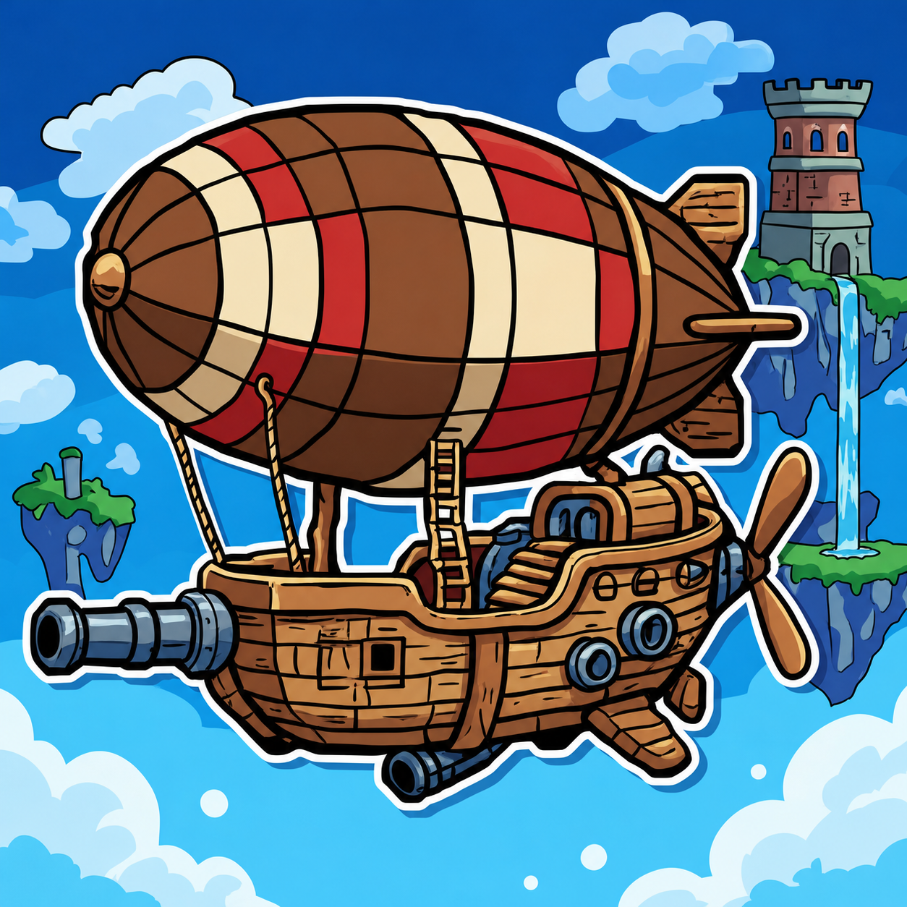
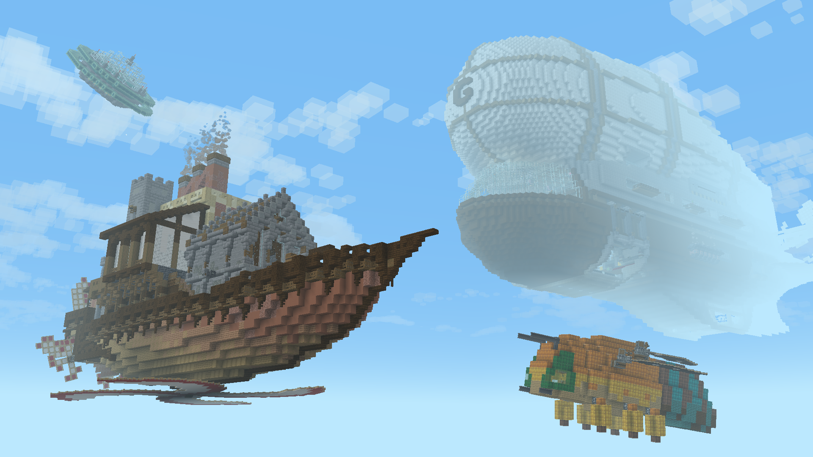
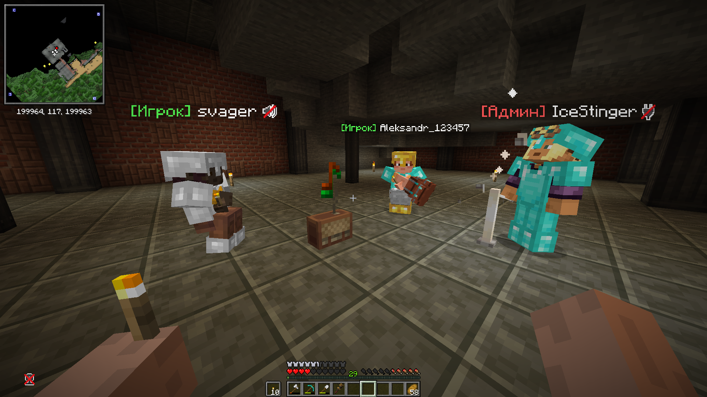
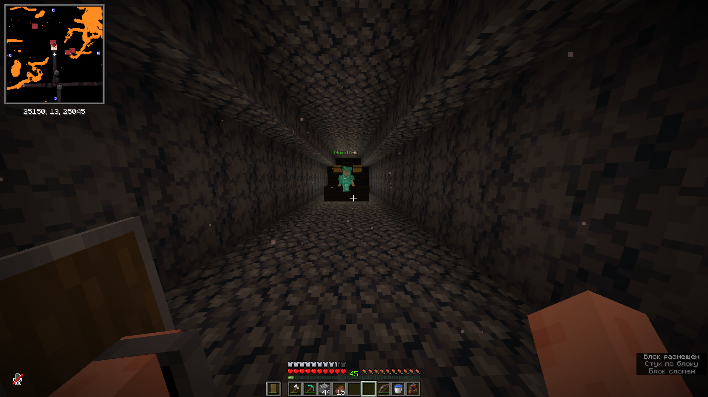

ОСНОВНОЙ АДРЕСРЕКОМЕНДУЕМ
Aeronafftik.xubi.org
ᴀᴇʀᴏɴᴀꜰꜰᴛɪᴋСобирай летающие машины, строй мастерские и исследуй общий мир, где каждая идея может взлететь.

01 — ПОРТ ОТПРАВЛЕНИЯ
Выбери удобный адрес. Оба ведут на один сервер.
Скопируй адрес и добавь его в список серверов Minecraft Java.
Aeronafftik.xubi.orgkg-bsz02.altare.global:2500002 — ПЕРВЫЙ ВЫЛЕТ
Подготовь клиент, добавь сервер — и увидимся в небе.
Установи Minecraft Java Edition версии 1.21.1 и загрузчик NeoForge для этой версии.
JAVA · NEOFORGEСписок модов и помощь с настройкой ищи в нашем Discord. Не смешивай клиент с другими сборками.
ПЕРЕЙТИ В DISCORD ↗В меню мультиплеера выбери «Добавить сервер», вставь основной адрес и отправляйся в полёт.
ЧТО ТЕБЯ ЖДЁТ
Соединяй детали Create и превращай идеи в работающие системы.
Проектируй суда и отправляйся исследовать пространство над облаками.
Делись проектами, помогай другим и строй рядом с сообществом.
03 — ИЗ БОРТОВОГО ЖУРНАЛА


04 — ПРАВИЛА ПОЛЁТА
Перед входом ознакомься с правилами. Они действуют на сервере и в сообществе.
Без оскорблений, травли, токсичности и перехода на личности — в чате, ЛС и голосовых каналах. Критика по существу разрешена.
Запрещены: 2+ одинаковых сообщения подряд, капс длиннее 5 слов, бессмысленный флуд и 3+ эмодзи/гифок/стикеров подряд от одного игрока. Оффтоп — в #флуд.
Запрещена реклама сторонних серверов, проектов, каналов и услуг — в любом канале и в ЛС. Упоминание без приглашения рекламой не считается.
Постройки — #творчество. Вопросы по Create — #хелп. Жалобы и апелляции — #тикеты. Сообщение не по теме переносится модератором.
Запрещены намеренные столкновения воздушных судов с чужими базами, постройками и кораблями в мирных зонах. Признаки: курс на чужую постройку, отсутствие торможения, повторные заходы. Авария без умысла — не нарушение, но ущерб компенсирует виновник.
Запрещены бесконечно зацикленные кинетические схемы без выключателя. Крупные фабрики и автофермы обязаны иметь аварийное отключение (рычаг / Redstone Link), доступное администрации. Если TPS ниже [15] дольше [5] минут — конструкцию уменьшают или отключают.
Не оставлять зависшие суда над чужими приватами и спавном. Судно заброшено, если владелец не взаимодействовал с ним [14] дней и оно мешает проходу или виду. Удаляется без возврата ресурсов.
Запрещены летательные аппараты на комбинации физических подшипников (Physics Bearings) и парусов (Sails) для нереалистичной мощности или скорости. Признак: несколько подшипников с парусами в одной силовой схеме. Наказание: разбор аппарата, при повторе — бан [7] дней.
Запрещено полное копирование чужих уникальных кораблей и заводских схем через Litematica / схемы Create без согласия автора. Полное копирование = совпадение ≥ [80%] блоков или повтор ключевых узлов (силовая схема, обвязка, декор). Вдохновляться и копировать отдельные механизмы — можно, с указанием автора.
Стройка ближе [50] блоков от чужого привата — только с согласия владельца. Спор решает администрация по логам.
Читы, X-Ray и сторонний софт запрещены. Абуз багов Create / Aeronautics (дюп, бесконечная энергия, обход механик) — бессрочный бан. Случайно найденный баг нужно сдать в #тикеты и не повторять.
Нельзя ломать чужие фабрики, скручивать механизмы ключом (Wrench) и воровать ресурсы из транспортеров, вагонеток и судов. Воровство фиксируется по логам (/co i), возврат ресурсов обязателен.
Запрещён захват чужих построек и ландшафта через Physics Assembler / Honey Glue. Наказание: снос конструкции + бан [3–7] дней.
Не оставлять висящие кроны деревьев, ямы глубиной [5+] блоков без ограждения и столбы из грязи выше [3] блоков. Модератор вправе потребовать убрать.
О багах и дюпах — только в #тикеты. Публичное распространение эксплойта — бан [30] дней. Использование в личных целях — бессрочный бан.
Wurst, Aristois, Impact, Sigma, Inertia, MeteorClient, ThunderHack, VipClient, LiquidBounce, Mineman, Asterisk, Jello; X-Ray (моды и ресурспаки); Fly; KillAura / AimBot / Reach; Speed / NoFall / Step / Phase / Scaffold; FreeCam; Baritone / Fabaritone; AutoTotem / AutoSwitch / ChestStealer.
AutoFish, AutoFarm, AutoCrop, AutoMine; авто-строители и авто-фермеры; Tweakeroo, ItemSwapper, InvMove, InventoryMove; SeedCracker / SeedChecker; ChestTracker / ChestLocator.
AutoClicker — только на AFK-фермах (≤ [1] клик/сек, один блок). В PvP, строительстве и бою — бан.
Оптимизация (Sodium, Lithium, FerriteCore и аналоги); шейдеры; ресурспаки без X-Ray; миникарта без радара сущностей и игроков; Litematica в режиме голограммы; ReplayMod / FlashBack для записи.
Item Drains; Copycats+ (плиты, кнопки); контейнеры с NBT; grass_block / dirt / stone; netherrack; spawner; Mechanical Drill и Hand Crank; Bedrock и админ-блоки; паруса + физические подшипники. Обход фильтра = абуз бага.
Решения модераторов обязательны к исполнению. Спор — через #тикеты к старшему админу.
Жалобы, апелляции и пропажи кораблей из-за багов — только через #тикеты. Жалоба без доказательств (скриншот или видео с датой, /co i, ник, время) не рассматривается.
Одна апелляция за [7] дней с момента наказания. Решение по апелляции окончательное.
Ничего не найдено. Попробуй изменить запрос.
Остались вопросы или нужно подать апелляцию? Напиши администрации в Discord ↗
05 — НА БОРТУ
Короткие ответы перед стартом.
Основной адрес: Aeronafftik.xubi.org. Запасной: kg-bsz02.altare.global:25000.
Minecraft Java Edition 1.21.1 и NeoForge. Состав сборки и помощь с установкой доступны в Discord.
Зайди в Discord ᴀᴇʀᴏɴᴀꜰꜰᴛɪᴋ и создай обращение в тикеты. Для жалобы приложи доказательства и данные из правил.
Все пять разделов находятся на этой странице. Используй поиск по правилам, чтобы быстро найти нужный пункт.